Chapitre II : Le traitement d'images, l'art du filtrage et de la transformation
Ce chapitre abordera les fondamentaux du traitement d'images numériques. Il introduira entre autres les filtres et transformées qui sont à la base des outils "d'apprentissage profond" (ou "Deep Learning" en anglais) utilisés en "vision par ordinateur".
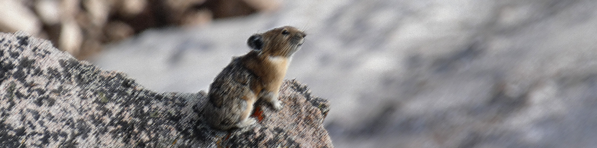
"Vibre la lumière, Chantez les couleurs, Il y met sa vie, Le bruit de son coeur.
Et comme un bateau, Porté par sa voile, Doucement le pinceau, Glisse sur la toile.
Et voilà l'homme, Qui croise avec ses yeux, Le temps d'un éclair, Le regard des dieux.
Cézanne peint, Il laisse s'accomplir le prodige de ses mains.
Cézanne peint, Et il éclaire le monde pour nos yeux qui n'voient rien."
Michel Berger & France Gall, Cézanne peint, 1985
Images exemples
Ce chapitre sera illustré par quelques images exemples.
Vous trouverez la première ici.

Il s'agit d'une photographie d'un Cynomys ludovicianus, aussi connu sous le nom de "Black-tailed Prairie Dog", prise en 2022 à Boulder (Colorado, USA).
Par défaut, nous utiliserons cette image pour illustrer les différentes méthodes de traitement d'images.
Dans les cas spécifiques où nous avons besoin d'une image contenant des contours ou des coins bien définis, nous utiliserons une seconde image que vous trouverez ici.

Il s'agit d'une photographie d'une mosaïque représentant une Lagidium peruanum, aussi connue sous le nom de "Vizcacha del Norte", prise en 2025 à Huancayo (Pérou).
Et dans les cas spécifiques où nous avons besoin d'une image avec des lignes ou des cercles à détecter, nous utiliserons une troisième image que vous trouverez ici.

Il s'agit d'une photographie d'un Ochotona princeps, aussi connu sous le nom d' "American Pika", prise en 2022 au Rocky Mountain National Park (Colorado, USA).
N'hésitez pas à aller regarder les détails de la prise de vue des différentes photographies dans les métadonnées des images !
Le traitement d'image
Lors du chapitre précédent, nous avons introduit le concept de "vision". Puis, nous avons parlé des problématiques liées à l'acquisition d'image avec une caméra. Ensuite, nous avons parlé des problématiques liées à l'enregistrement d'images sous forme numérique. Et enfin, nous avons introduit les concepts de "retouche" et "d'étalonnage" d'images.
La suite logique dans n'importe quel projet de vision par ordinateur est le traitement d'image. Il s'agit de l'ensemble des méthodes mathématiques et algorithmiques "classiques" (hors IA) appliquables à des images numériques afin de les adapter à une méthode d'analyse, en faisant ressortir des informations pertinentes.
L'idée est qu'une image peut être considérée comme un signal discret 2D, et par conséquent on peut lui appliquer :
-
Des manipulations géométriques, permettant d'adapter l'image selon un besoin spécifique en termes de dimensions, d'orientation, ou de translation spatiale.
-
Des filtres, qui viennent modifier les valeurs des pixels de l'image pour faire ressortir certaines propriétes spatiales de l'image (les petits ou les gros élements, les contours, les coins, etc.).
-
Des transformations, qui donnent accès à des espaces de représentation différents pour un image, permettant ainsi d'en tirer des caractéristiques spatiales quantitatives (fréquences horizontales ou verticales, lignes, cercles, etc.).
Ce chapitre vous présentera les outils de base en traitement d'image. Il ne s'agira pas ici d'être exhaustif. Nous nous attarderons en particulier sur les méthodes qui sont à l'origine de l'analyse d'images par IA, qui sera le sujet des 2 derniers chapitres de ce cours.
Manipulations géométriques
Certaines applications de vision par ordinateur nécessitent d'adapter la dimension d'une image, de déplacer un objet sur une image, ou de changer son orientation. Nous allons voir comment réaliser ces manipulations géométriques de base, et ce qu'elles impliquent en termes de reconstitution du signal contenu dans l'image.
Agrandissement / réduction
Comme mentionné plus tôt, on peut considérer une image numérique comme un signal 2D discret. Par conséquent, modifier les dimensions d'une image numérique revient à rééchantillonner ce signal.
C'est ce que l'on appelle du "redimensionnement d'image". Lorsque l'on cherche à augmenter les dimensions d'une image (et donc son nombre d'échantillons), on parle d'un "agrandissement". Lorsque l'on cherche à diminuer les dimensions d'une image (et donc son nombre d'échantillons), on parle d'une "réduction".
La grande problématique du redimensionnement d'image est de respecter le théorème de Nyquist-Shannon vu au chapitre précédent : pour représenter discrètement un signal n'ayant pas de composantes fréquentielles supérieures à \(f_{max}\), il faut choisir une fréquence d'échantillonnage \(f_s\) telle que \(f_s > 2 f_{max}\).
Une image étant un signal 2D discret, il faut donc que la fréquence d'échantillonnage respecte ce critère vis-à-vis de la plus grand fréquence spatiale contenue dans l'image, selon les axes horizontaux et verticaux. Pour rappel, si ce critère n'est pas respecté lors du redimensionnement, l'image redimensionnée risque de souffrir d'un phénomène appelé aliasing, qui sera visible sous la forme d'artefacts appelé "Moiré".
Agrandir une image revient à augmenter sa fréquence d'échantillonnage horizontale et verticale. Il n'y a donc aucun de risque d'enfreindre le critère de Nyquist-Shannon.
Pour agrandir une image on va donc simplement appliquer l'algorithme suivant :
| Agrandissement d'une image |
|---|
| - On étend le maillage de l'image en augmentant le nombre de lignes et de colonnes de la matrice par l'insertion de zéros avec un pas régulier. |
| - On interpole les valeurs de l'image initiale pour compléter les zéros. |
Voici une illustration de cet algorithme pour une image de \(4 \times 4\) pixels agrandie pour faire \(8 \times 8\) :
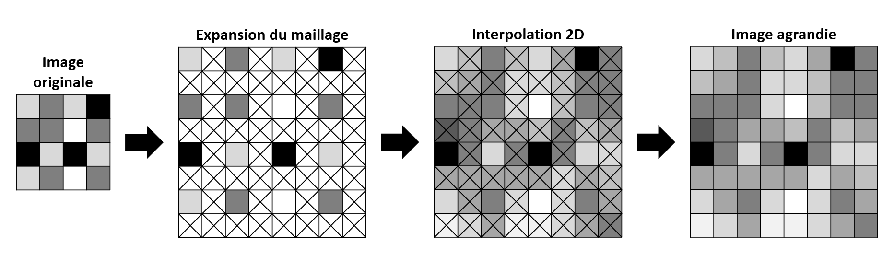
Réduire une image revient à réduire sa fréquence d'échantillonnage horizontale et verticale. Il y a donc un risque d'enfreindre le critère de Nyquist-Shannon !
Pour réduire les dimensions d'une image par un facteur entier, on peut appliquer l'algorithme suivant :
| Réduction d'une image |
|---|
| - On applique un filtre passe-bas "anti-aliasing" afin de respecter le critère de Nyquist-Shannon. |
| - On décime l'image en enlevant des lignes et des colonnes à la matrice avec un pas régulier. |
Voici une illustration de cet algorithme pour une image de \(8 \times 8\) réduite pour faire \(4 \times 4\) :
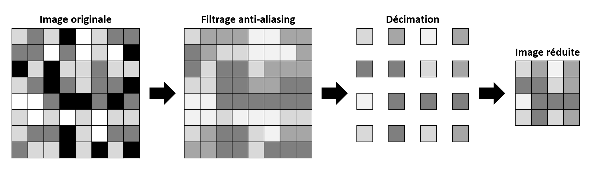
Dans le cas où les dimensions désirées ne correspondent pas à un facteur de réduction entier, la décimation ne suffit pas : on doit utiliser une méthode d'interpolation.
C'est pourquoi les méthodes de redimensionnement d'image impliquent en général de choisir une technique d'interpolation 2D.
Voici 4 techniques classiques :
-
Plus proches voisins : le pixel interpolé prend la valeur du pixel le plus proche.
-
Bi-linéaire : il s'agit d'une interpolation linéaire 2D à partir des 4 pixels voisins.
-
Bi-cubique : il s'agit d'une interpolation cubique 2D à partir des 8 pixels voisins.
-
Lanczos : le pixel est interpolé à partir des pixels voisins, avec des pondérations déterminées par une "fenêtre de Lanczos".
Sous Python, on peut facilement redimensionner une image avec la méthode resize de Pillow.
Mettons, que nous ayons importé une image avec Pillow sous la forme d'une variable img, et que nous voulons lui donner les dimensions \(600 \times 600\). Voici comment faire avec les 4 techniques d'interpolation que nous avons présentées :
img_resized_nearest = img.resize((600,600),Image.Resampling.NEAREST)
img_resized_bilinear = img.resize((600,600),Image.Resampling.BILINEAR)
img_resized_bicubic = img.resize((600,600),Image.Resampling.BICUBIC)
img_resized_lanczos = img.resize((600,600),Image.Resampling.LANCZOS)
Voici l'application de cette méthode avec différentes techniques d'interpolation pour augmenter les dimensions d'une version \(100 \times 100\) de notre image d'un Cynomys ludovicianus vers \(500 \times 500\) :
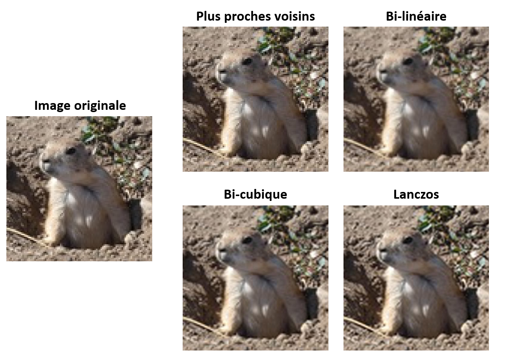
Et voici à présent l'application de la même méthode avec différentes techniques d'interpolation pour diminuer les dimensions d'une version \(500 \times 500\) de notre image d'un Cynomys ludovicianus vers \(100 \times 100\) :
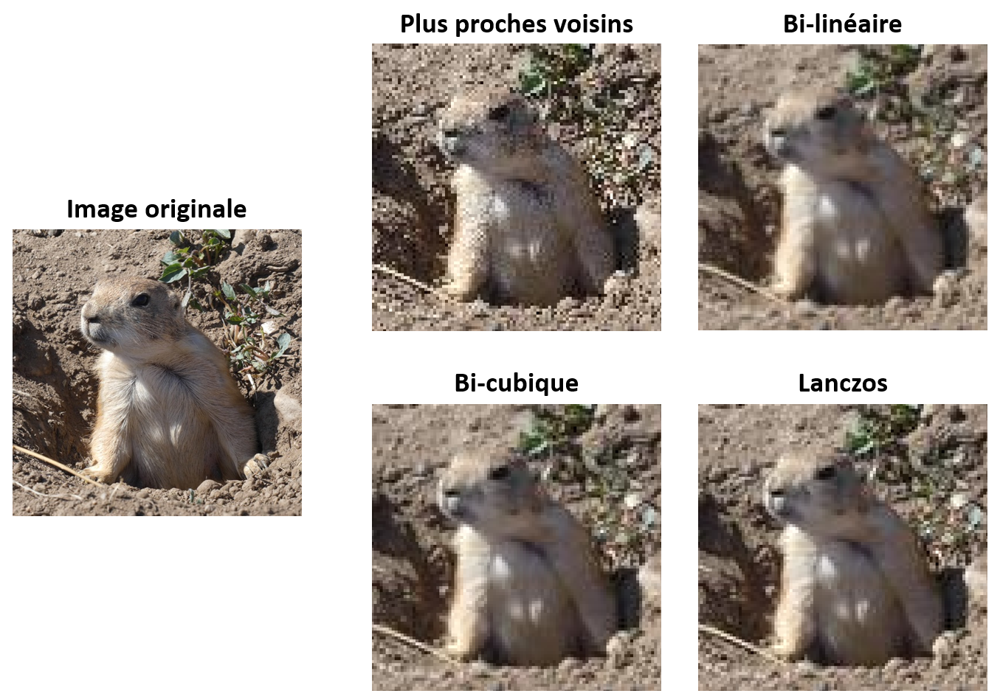
On peut faire les observations suivantes :
-
La technique des "Plus proches voisins" est la plus rapide, mais elle donne un aspect "pixelisé" à l'image, ce qui en fait la méthode classique pour le "pixel art".
-
La technique Lanczos est celle donnant le meilleur résultat sur notre exemple, mais elle est plus coûteuse en calculs et peut amplifier certains artéfacts dans l'image.
-
Les techniques bi-linéaire et cubiques sont souvent considérées comme des bons compromis, la méthode bi-cubique donnant généralement un meilleur résultat.
| Nota Bene |
|---|
| Lorsque l'on redimensionne une image, il faut bien garder à l'esprit que : |
| - La réduction d'une image ne peut se faire sans perte d'information. |
| - L'agrandissement d'une image ne peut pas combler l'information manquante. |
Rotation / translation
Lorsqu'une application nécessite de déplacer un objet à un emplacement donné de l'image, par exemple pour le centrer, on utilise une combinaison de translations horizontales et verticales.
Il s'agit d'une opération très simple : on décale tous les pixels de l'image \(I[x,y]\) d'un certain nombre de pas \(\Delta x\) à l'horizontale et d'un certain nombre de pas \(\Delta y\) à la verticale.
\(I[x,y] = I[x - \Delta x , y - \Delta y]\)
Mais il y a tout de même un problème : que faire des pixels qui sortent de la matrice d'un côté, ou qui se retrouvent sans valeur de l'autre ?
On utilise classiquement les 2 options suivantes :
-
La complétion par des zéros : on peut supprimer les pixels qui sortent de la matrice, et compléter ceux qui se retrouvent sans valeur par des zéros.
-
La complétion cyclique : on peut compléter les pixels sans valeurs et récupérant les pixels sortants, de manière à former un cycle.
Aucune des 2 options n'est idéale, on choisira l'une ou l'autre suivant les contraintes de notre application de vision par ordinateur.
Voici une illustration de ces 2 options pour une image de \(8 \times 8\) :
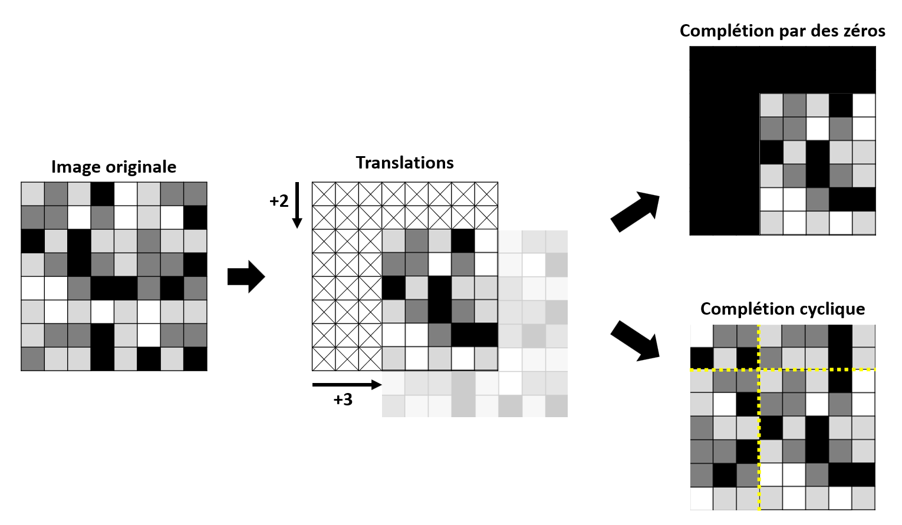
Sous Python, avec Pillow, on peut appliquer à une image importée img une translation de 50 pixels vers la droite et de 100 pixels vers le bas, avec complétion par des zéros, en utilisant la méthode transform :
largeur, hauteur = img.size
img_translation = img.transform((largeur,hauteur),Image.Transform.AFFINE,(1,0,-50,0,1,-100))
Le premier argument de transform permet de conserver les dimensions de l'image.
Le second argument correspond aux paramètres de la transformation affine à réaliser pour notre translation 2D. Si on note \(x\) et \(y\) les positions horizontales et verticales des pixels :
\(x = 1x + 0y - 50\) \(y = 0x + 1y - 100\)
Pour une translation vers la gauche ou vers le haut, il suffit alors de changer le signe du 50 ou du 100.
Si on veut appliquer la même translation à img, mais avec complétion cyclique, il faut utiliser ImageChops.offset de Pillow :
img_translation = ImageChops.offset(img,50,100)
Lorsqu'une application nécessite de modifier l'orientation d'un objet de l'image, on utilise une opération de rotation.
Appliquer une rotation d'un angle \(\theta\) aux pixels d'une image \(I[x,y]\) autour de son centre \((c_x,c_y)\) revient à :
\(I[x,y] = I[c_x + (x-c_x) cos(\theta) + (y-c_y) sin(\theta) , c_y - (x-c_x) sin(\theta) + (y-c_y) cos(\theta)]\)
Un premier problème de cette opération est que \(c_x + (x-c_x) cos(\theta) + (y-c_y) sin(\theta)\) et \(c_y - (x-c_x) sin(\theta) + (y-c_y) cos(\theta)\) peuvent donner des valeurs non entières. La rotation d'une image numérique implique donc forcément une interpolation 2D.
Les 4 mêmes méthodes d'interpolation que pour le redimensionnement d'images peuvent être utilisées ("Plus proches voisins", bi-linéaire, bi-cubique, Lanczos).
Un second problème est que suivant les dimensions de l'image et l'angle de rotation, une partie des pixels peuvent sortir de la matrice. Il y a alors 2 options :
-
La découpe : on ignore simplement les pixels sortant de la matrice.
-
L'expansion : quitte à interpoler l'image, on la redimensionne pour qu'elle rentre dans la matrice.
En général, les pixels se retrouvant sans valeurs sont complétés par des zéros.
Voici une illustration de ces 2 options pour une image \(8 \times 8\) :
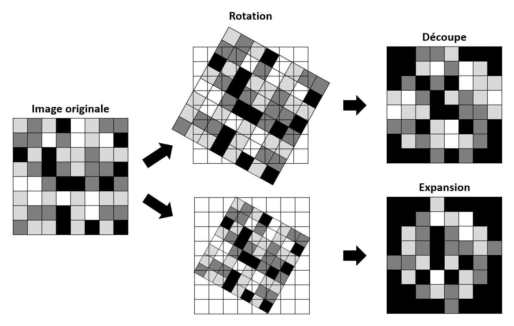
Sous Python, on peut appliquer à une image importée avec Pillow img une rotation par un angle de 45° avec interpolation bi-cubique en utilisant la méthode rotate:
img_rotation = img.rotate(45,resample=Image.Resampling.BICUBIC)
Par défaut, il s'agit de l'option avec découpe. Si l'on veut en plus utiliser l'option avec expansion, il faut utiliser :
img_rotation = img.rotate(45,resample=Image.Resampling.BICUBIC,expand=True)
Voici l'application de translations (classique ou cyclique) et de rotations (classique ou avec expansion) à notre image d'un Cynomys ludovicianus :
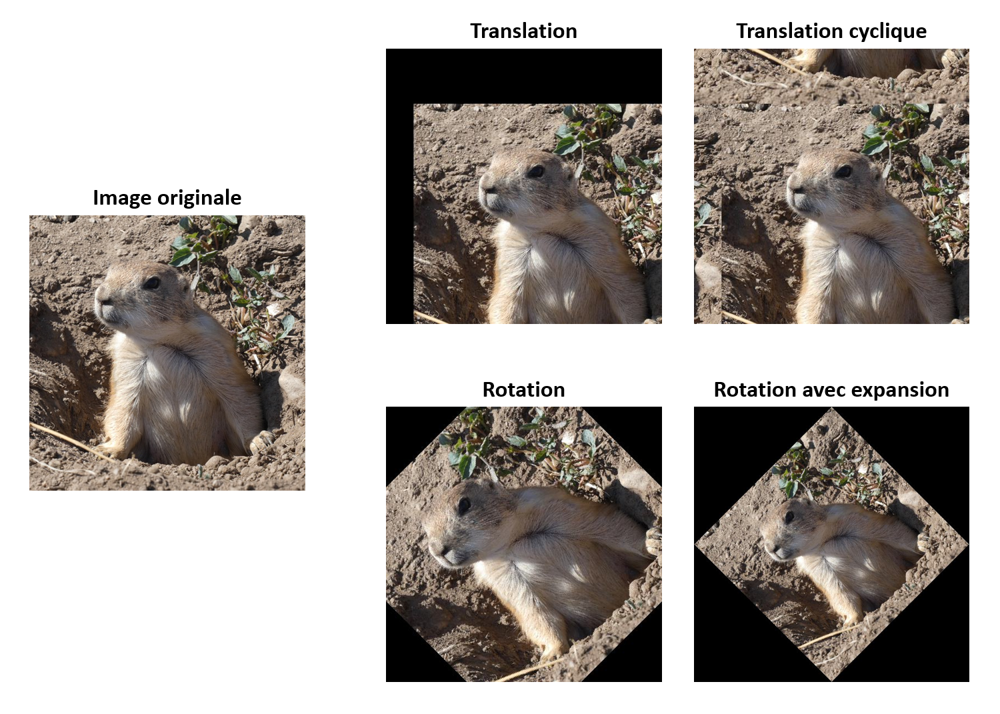
Une fois encore, pour la translation comme pour la rotation, aucune option n'est pleinement satisfaisante. On choisira l'une ou l'autre selon les besoins d'une application de vision par ordinateur.
Filtrage linéaire
Définition
Comme évoqué lors du Chapitre 1, en vision par ordinateur on cherche à reproduire les mécanismes de la vision humaine avec des machines. Certains traitements réalisés par le cortex visuel humain peuvent être approchés en traitement d'images numériques par ce que l'on appelle des filtres linéaires, et plus particulièrement les filtres linéaires "invariant".
Donc, de nombreux traitements classiques en traitement d'image peuvent être définis comme des filtres linéaire ou des combinaisons de filtres linéaires. Il s'agit d'un principe essentiel en vision par ordinateur, nous verrons dans les chapitres qu'ils sont à la base des outils d'IA utilisés pour analyser des images.
En traitement d'image, un filtre linéaire est une fonction \(f\) qui prend en entrée une image \(I\) et renvoie une nouvelle image \(S = f(I)\). Elle a les propriétés suivantes :
-
Additivité : soit 2 images \(I_1\) et \(I_2\), alors \(f(I_1+I_2) = f(I_1) + f(I_2)\).
-
Homogénéité : soit \(I\) une image et un scalaire \(\alpha\), alors \(f(\alpha I) = \alpha I\).
Et si le filtre est en plus invariant, il a la propriété suivante :
- Invariance : si \(S[x,y] = f(I[x,y])\) alors pour toute translation horizontale \(\Delta x\) et verticale \(\Delta y\) on a \(f(I[x - \Delta x , y - \Delta y]) = S[x - \Delta x , y - \Delta y]\).
Un filtre linéaire invariant est entièrement caractérisé par sa réponse impulsionnelle \(h\), une matrice 2D aussi appellée noyau de convolution ou "kernel" :
\(S[x,y] = \sum_{i=-\infty}^{\infty} \sum_{j=-\infty}^{\infty} h[i,j] I[x-i,y-j]\)
Avec cette formulation, on part du principe que le kernel à des indices centrés : l'indice correspondant à son centre est (0,0).
C'est pourquoi on définit en général un filtre linéaire invariant par son kernel.
Convolution
La formule précédente correspond à la version discrètre et 2D* d'une opération de convolution entre le kernel \(h\) et l'image numérique \(I\).
Pour simplifier, nous appellerons cette opération "convolution". Nous la noterons \(\ast\).
Voici quelques propriétés utiles de cette opération :
-
Commutativité : soit 2 matrices \(I\) et \(J\), alors \(I \ast J = J \ast I\).
-
Associativité : soit 3 matrices \(I\), \(J\) et \(K\), alors \(I \ast (J \ast K) = (I \ast J) \ast K\).
-
Distributivité : soit 3 matrices \(I\), \(J\) et \(K\), alors \(I \ast (J + K) = I \ast J + I \ast K\).
-
Homogénéité : soit 2 matrices \(I\) et \(J\), et un scalaire \(\alpha\)k, alors \(I \ast (\alpha J) = \alpha (I \ast J)\).
-
Invariance (en translation) : soit 2 matrices \(I\) et \(J\), alors \((I \ast J)[x - \Delta x , y - \Delta y] = I[x - \Delta x , y - \Delta y] \ast J = I \ast J[x - \Delta x , y - \Delta y]\).
L'élément identité de la convolution est une impulsion de Dirac discrète et 2D :
\(\delta[x,y]= \begin{cases} 1 & \text{si } x=0 \text{ et } y=0,\\ 0 & \text{sinon}. \end{cases}\)
Donc \(I \ast \delta = I\), qui revient à dire qu'une convolution par une impulsion de Dirac ne change pas l'image d'origine.
Une autre propriété importante de la convolution est son lien avec la transformée de Fourier. La transformée de Fourier d'une convolution et le produit des transformées de Fourier :
\(\mathcal{F}(I \ast J) = \mathcal{F}(I) \mathcal{F}(J)\)
Nous reparlerons de l'analyse spectrale des images par transformée de Fourier dans la suite de ce chapitre.
En pratique, utiliser un kernel de dimensions infinies est bien entendu impossible. C'est pourquoi on approxime la réponse impulsionnelle du filtrage désiré par un kernel de dimensions finies.
Par exemple, pour un kernel \(h\) de dimensions \((2k+1) \times (2k+1)\), la convolution avec une image \(I\) devient :
\(S[x,y] = \sum_{i=-k}^{k} \sum_{j=-k}^{k} h[i,j] I[x-i,y-j]\)
Une image étant une matrice 2D finie, si nous appliquons cette formule à tous les pixels de l'image, certains pixels \(I[x-i,y-j]\) n'existeront pas. Alors comment gérer ces cas sur les bords ?
Pour permettre à la matrice de sortie \(S\) d'avoir les mêmes dimensions que l'image d'origine, on va en général ajouter des lignes et des colonnes à \(I\) de manière à ce que la convolution puisse s'appliquer à tous les pixels de l'image. Cette extension de \(I\) peut se faire différentes façons :
-
Complétion par des zéros : on met juste les pixels ajoutés à zéro.
-
Complétion par répétition : on répète les pixels situés sur les bords de l'image.
-
Complétion par symétrie : on reproduit les pixels de l'image par symétrie sur les bords.
-
Complétion circulaire : on considère l'image comme étant périodique, et on prolonge donc les pixels au-delà d'un bord par ceux du bord opposé.
Cette dernière option est la plus couramment utilisée. On définit même une opération de convolution circulaire, notée \(\circledast\).
Pour une image \(I\) de dimensions \(M \times N\), la convolution circulaire par un kernel \(h\) de dimensions \((2k+1) \times (2k+1)\) sera définie comme :
\(S[x,y] = \sum_{i=-k}^{k} \sum_{j=-k}^{k} h[i,j] I[(x-i) \bmod (M) , (y-j) \bmod (N)]\)
Et \(S\) aura bien les mêmes dimensions que \(I\).
Voici une illustration du fonctionnement de la convolution circulaire d'une image par un kernel :
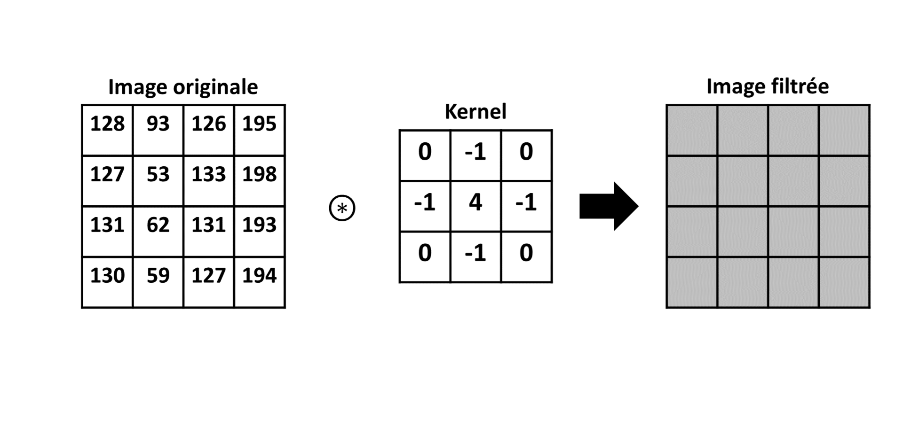
L'avantage de la convolution circulaire est qu'elle permet de conserver la propriété suivante, vis-à-vis de la Transformée de Fourier Discrète (TFD) :
\(TFD(I \circledast J) = TFD(I) TFD(J)\)
| Nota Bene |
|---|
| On peut aussi choisir d'appliquer la convolution à \(I\) sans extansion. |
| Alors, la matrice \(S\) aura des dimensions plus faibles que \(I\), de \(-2k\). |
| Ce sera le choix des méthodes d'IA que nous verrons aux chapitres suivants. |
Choix du kernel
Nous allons voir quelques exemples classiques de kernels \(3 \times 3\) en traitement du signal.
Tout d'abord, comme nous l'avions évoqué plus tôt, l'idendité pour la convolution est une impulsion de Dirac. Pour un kernel \(3 \times 3\), ceci revient à une convolution circulaire par la matrice :
\(\begin{pmatrix} 0 & 0 & 0 \\ 0 & 1 & 0 \\ 0 & 0 & 0 \\ \end{pmatrix}\)
Après application d'une convolution circulaire à une matrice \(I\) avec ce kernel, on obtient \(S = I\). L'identité est donc rarement utilisée seule, mais plutôt combinée avec d'autres filtrages linéaires.
Une application typique du filtrage linéaire d'images numériques est le lissage.
Il s'agit de réduire les composantes haute fréquence horizontales et verticales de l'image. Ce type de filtrage peut avoir différentes utilités : réduire l'impact du bruit, faire ressortir les grands objets plutôt que les petits détails, anti-aliasing, etc.
Ceci peut être fait par convolution avec un kernel remplaçant chaque pixel de l'image par une moyenne des pixels dans le voisinage \(3 \times 3\). Voici les 2 principaux types de moyennes utilisées :
- Le filtre "box", qui réalise simplement une moyenne arithmétique des valeurs du pixel et de ses 8 voisins :
\(\frac{1}{9} \begin{pmatrix} 1 & 1 & 1 \\ 1 & 1 & 1 \\ 1 & 1 & 1 \\ \end{pmatrix}\)
- Le filtre "gaussien", qui approxime une pondération gaussienne 2D des valeurs du pixel et de ses 8 voisins :
\(\frac{1}{16} \begin{pmatrix} 1 & 2 & 1 \\ 2 & 4 & 2 \\ 1 & 2 & 1 \\ \end{pmatrix}\)
Le filtre "box" est plus simple mais moins efficace que le filtre "gaussien" pour lisser une image.
Une autre application typique du filtrage linéaire d'images numériques est la détection de contours.
Il s'agit ici de faire ressortir les transitions entre différentes zones de l'image, en utilisant les dérivées de l'image par rapport à l'axe horizontal et l'axe vertical. L'idée est qu'à la frontière entre 2 zones de l'image, la dérivée sera élevée, et elle le sera d'autant plus que le contraste entre les 2 zones est grand.
En \(3 \times 3\), une dérivée horizontale peut être approximée par le kernel \(\begin{pmatrix} -1 & 0 & 1 \end{pmatrix}\), et une dérivée verticale par le kernel \(\begin{pmatrix} -1 \\ 0 \\ 1 \end{pmatrix}\).
Voici les 3 principaux types de dérivations utilisées en pratique :
- Les 2 filtres de Sobel, avec le kernel \(G_x\) combinant une dérivation horizontale et un lissage vertical, et le kernel \(G_y\) combinant une dérivation verticale et un lissage horizontal :
\(G_x = \begin{pmatrix} -1 & 0 & 1 \\ -2 & 0 & 2 \\ -1 & 0 & 1 \\ \end{pmatrix}\)
\(G_y = \begin{pmatrix} -1 & -2 & -1 \\ 0 & 0 & 0 \\ 1 & 2 & 1 \\ \end{pmatrix}\)
\(G_x\) permet de faire ressortir les contours verticaux, et \(G_y\) les contours horizontaux.
- Le filtre "Laplacien à 4 voisins", et une approximation de l'opérateur Laplacien en 2D (addition de la dérivée seconde horizontale et de la dérivée seconde verticale) avec 4 pixels voisins :
\(\begin{pmatrix} 0 & -1 & 0 \\ -1 & 4 & -1 \\ 0 & -1 & 0 \\ \end{pmatrix}\)
- Le filtre "Laplacien à 8 voisins", et également une approximation de l'opérateur Laplacien en 2D, mais avec les 8 pixels voisins :
\(\begin{pmatrix} -1 & -1 & -1 \\ -1 & 8 & -1 \\ -1 & -1 & -1 \\ \end{pmatrix}\)
Avec ce type de kernels, nous faisons ressortir les contours, mais nous ne réalisons pas une réellement une "détection" de contours, dans le sens où nous n'extrayons pas les positions des contours. Nous verrons dans la suite de ce chapitre des méthodes de "détection de contours" à proprement parler.
Enfin, une dernière application typique du filtrage linéaire d'images numériques est l'amélioration de la netteté.
Là où le lissage va donner un aspect flou en faisant ressortir les composantes basse fréquence de l'image, un filtre d'amélioration de la netteté va faire ressortir les composantes haute fréquence. Pour ce faire, une technique possible est de renforcer les contours dans l'image, en additionnant l'image originale avec l'image obtenue après filtrage pour de la détection de contours.
La convolution étant distributive :
\(I + I \circledast \begin{pmatrix} 0 & -1 & 0 \\ -1 & 4 & -1 \\ 0 & -1 & 0 \\ \end{pmatrix} = I \circledast \left(\begin{pmatrix} 0 & 0 & 0 \\ 0 & 1 & 0 \\ 0 & 0 & 0 \\ \end{pmatrix} + \begin{pmatrix} 0 & -1 & 0 \\ -1 & 4 & -1 \\ 0 & -1 & 0 \\ \end{pmatrix}\right)\)
D'où le kernel suivant pour améliorer la netteté d'une image numérique :
\(\begin{pmatrix} 0 & -1 & 0 \\ -1 & 5 & -1 \\ 0 & -1 & 0 \\ \end{pmatrix}\)
Sous Python, avec Pillow, on peut appliquer une convolution par un kernel ker à une image img avec ImageFilter.Kernel :
filt = ImageFilter.Kernel(size=(3,3),kernel=kernel,scale=1)
img_filtered = img.filter(filt)
La première commande définit le filtre linéaire (avec ses dimensions, son kernel, et optionnellement un facteur d'échelle), la seconde l'applique à l'image.
Cette méthode ne fonctionne que pour des kernels \(3 \times 3\) et \(5 \times 5\), qui sont les dimensions les plus classiques. Mais Pillow possède aussi de nombreuses implémentations de filtres avec des kernel pré-définis.
OpenCV possède une méthode filter2D pour l'application d'un filtre linéaire à partir d'un kernel donné, qui est un peu plus flexible.
Voici quelques exemples d'application de filtre linéaires à notre image d'un Cynomys ludovicianus :
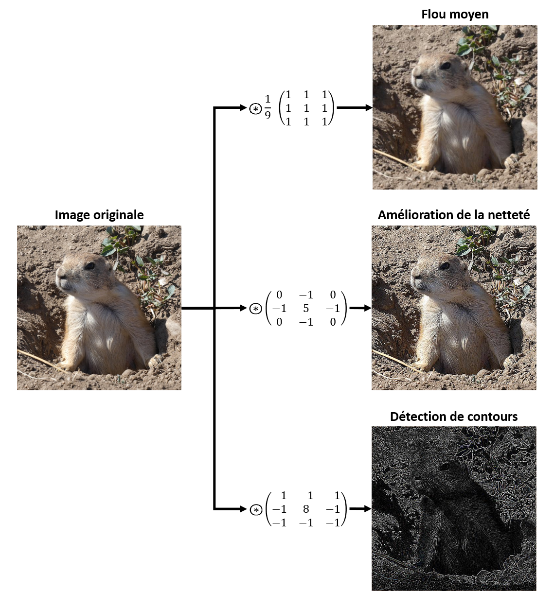
| Nota Bene |
|---|
| Nous avons vu ici des exemples de kernels \(3 \times 3\), mais plus le kernel choisi est grand, meilleure est l'approximation de la réponse impulsionnelle recherchée. |
| Aussi, les manipulations géométriques vues précédemment peuvent être en partie définies par des filtrages linéaires, notamment les étapes de filtrage anti-aliasing et d'interpolation. |
FFT et filtrage fréquentiel
Comme mentionné plus tôt, une image on peut considérer une image numérique comme un signal 2D discret. Afin de comprendre la structure d'une image, il peut être intéressant de discriminer ses différentes composantes fréquentielles horizontales et verticales.
Les faibles fréquences vont caractériser les grands éléments de l'image, alors que les hautes fréquences vont caractériser les petits détails. La moyenne des valeurs de l'image correspondra à composante de fréquence nulle. Et si une image présente une forte périodicité horizontale ou verticale, une analyse fréquentielle permettra de la faire ressortir clairement.
Une fois les composantes fréquentielles de l'image caractérisées, on peut lui appliquer différents filtres dans le domaine fréquentiel, afin de faire resortir des élements plus ou moins grands.
Nous allons donc voir comme réaliser l'analyse spectrale d'une image, puis lui appliquer un filtrage en fréquences.
Analyse spectrale d'une image
En traitement du signal, on utilise la transformée de Fourier pour obtenir la représentation d'un signal dans le domaine fréquentiel, appelé "spectre". Lorsque l'on dispose d'un signal discret, on utilise la transformée de Fourier discrète (TFD) pour approcher de manière discrète le spectre du signal continu correspondant.
Soit une image numérique \(I\) de dimensions \(M \times N\). Sa TFD sera une matrice 2D $F£, complexe et de mêmes dimensions, définie comme :
\(F[u,v] = \sum_{x=0}^{M-1} \sum_{y=0}^{N-1} I[x,y] \exp(-2 \pi j (\frac{u x}{M} + \frac{v y}{N}))\)
Mais la complexité de l'algorithme naïf de la TFD est élevée : \(\mathcal{O}(N^2 M^2)\) ! C'est pourquoi on utilise en général l'algorithme de la FFT ("Fast Fourier Transform"), qui fait descendre la complexité du calcul de la TFD à \(\mathcal{O}(N M (log(M) + log(N)))\).
L'idée est que le calcul naïf de la TFD évalue plusieurs fois les mêmes valeurs, ce que la FFT permet d'éviter.
Le spectre discret \(F\) étant complexe, on peut en tirer 2 informations :
-
L'amplitude à partir du module.
-
La phase à partir de l'argument.
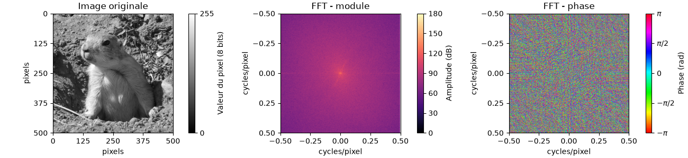
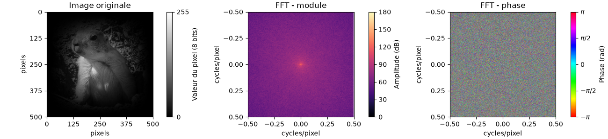
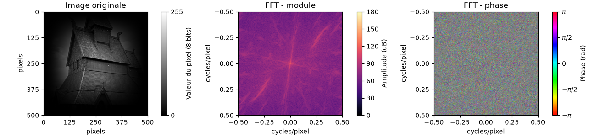
Filtrage en fréquences d'une image
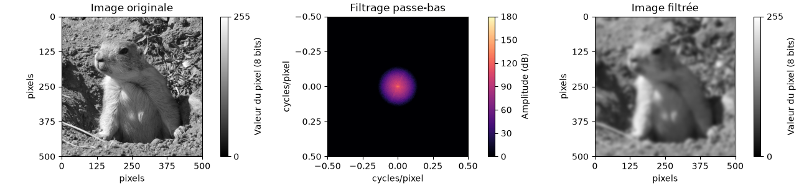
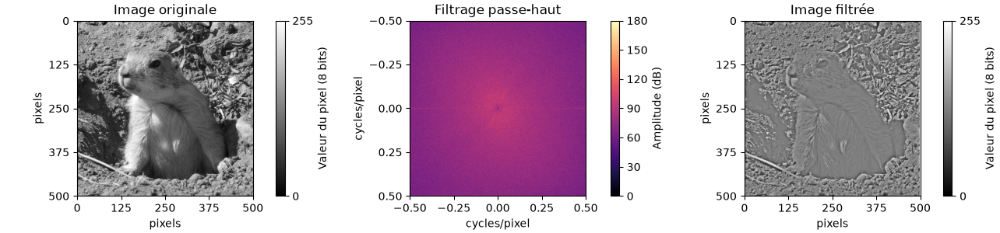
Opérations morphologiques
Element structurant
Filtre médian
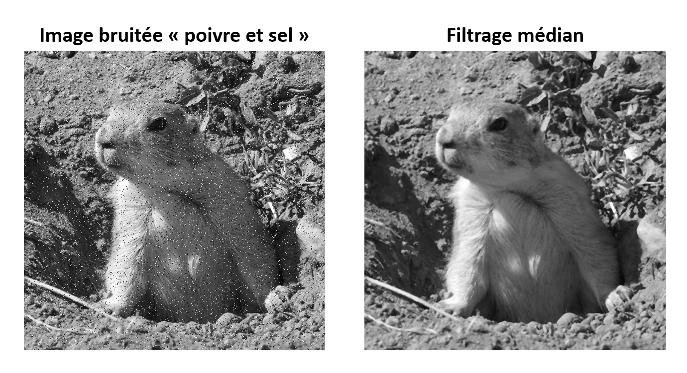
Erosion et dilatation
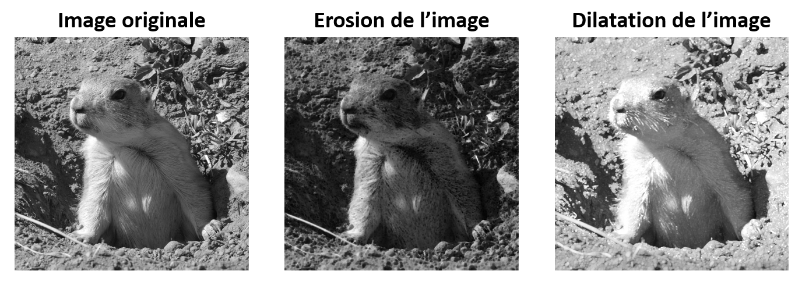
Ouverture et fermeture
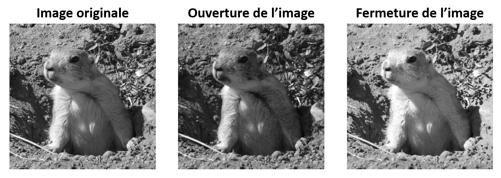
Détection de contours ou de coins
Filtre de Sobel
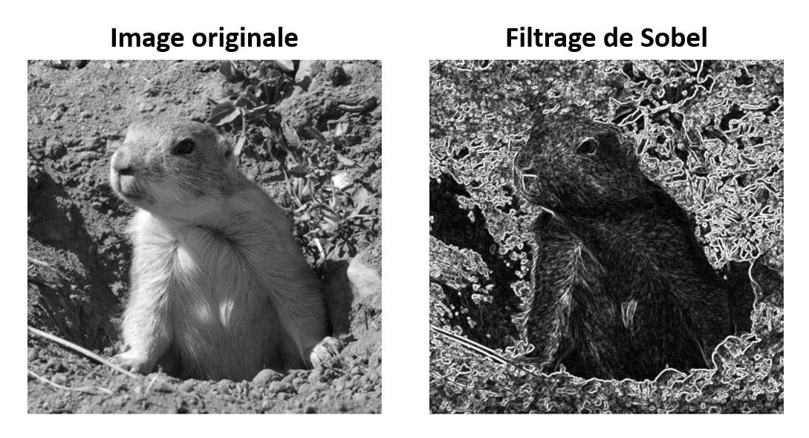
Filtre de Canny
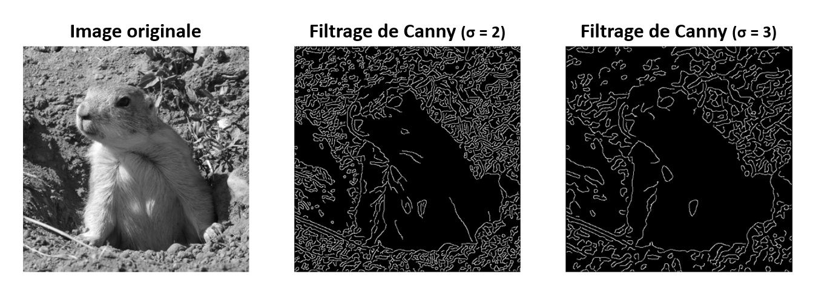
Filtre de Harris
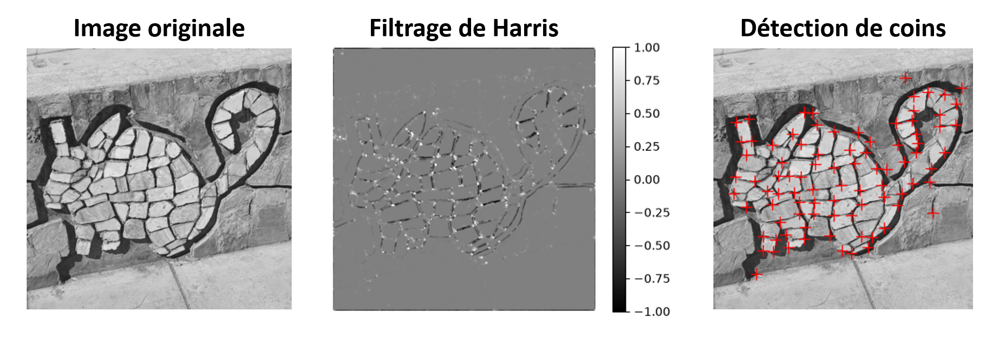
Détection de forme
La transformée de Hough
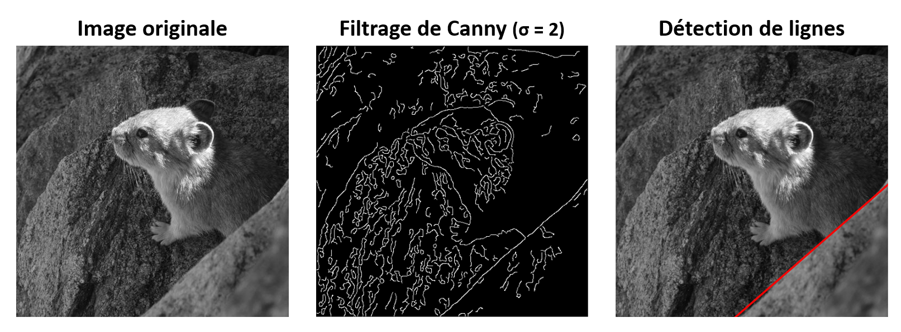
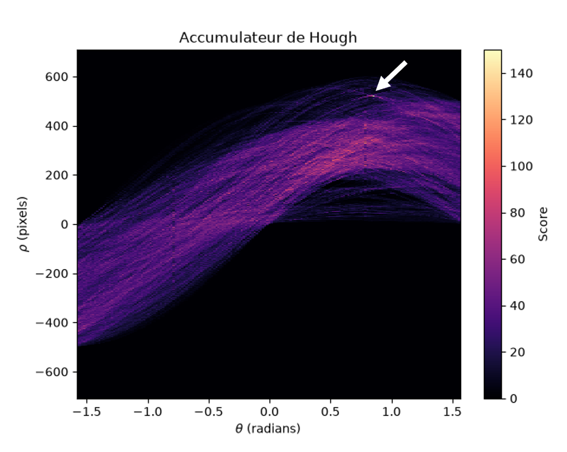
Adaptation aux cercles
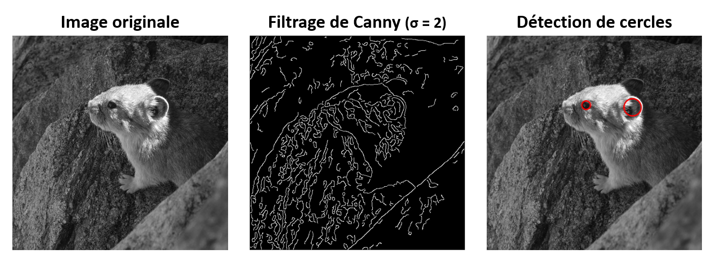
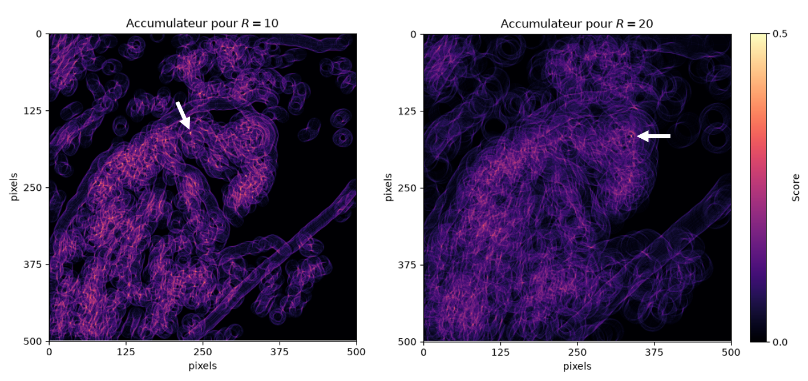